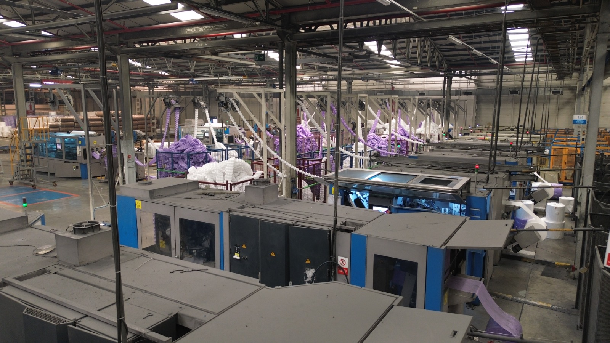

About us:
At Canadian Pocket Springs (CPS), we are proud to be a Canadian company dedicated to producing high-quality pocket springs. Based in Toronto, Ontario, since 2023, our premium Canadian pocket springs have earned exceptional customer satisfaction. Innerspring mattresses have been a popular choice for many years. However, the mattress industry is now embracing a new era, with pocket spring mattresses gaining traction. These mattresses feature individually encased springs, offering superior comfort, enhanced pressure point support, and a more restful sleep. Our company specializes in producing these innovative pocket springs. We are committed to continuously improving our products, contributing to the creation of even more comfortable mattresses. Together with our partners and clients, we are shaping a future of unparalleled comfort and innovation. Discover the difference that our premium pocket springs can make. Learn more about our products and contact us directly. We're always happy to answer your questions and be in touch.
Why us:
From the beginning of our work until today, we have done our best to produce Canadian pocket springs with premium quality and a reasonable price. We are able to produce our products based on our clients' desires. We can produce different types of coils with pocket heights ranging from 5 to 9 inches. Our mission is to continuously improve our quality and achieve mass production. We truly value our clients and are committed to shaping a brighter future.
